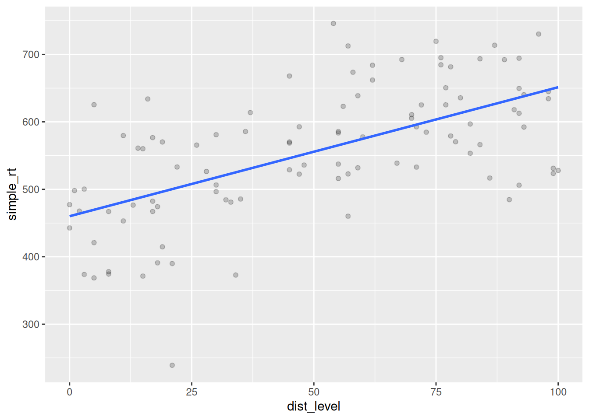

Up to now, we’ve been focusing on estimating and interpreting the effect of a variable or linear combination of predictor variables on a response variable. However, there are often situations where the effect of one predictor on the response depends on the value of another predictor variable. We can actually estimate and interpret this dependency as well, by including an interaction term in our model.
4.1 Continuous-by-Categorical Interactions
One common example of this is when you are interested in whether a linear relationship between a continous predictor and a continuous response is different for two groups.
Let’s consider a simple fictional example. Say you are interested in the effects of sonic distraction on cognitive performance. Each participant in your study is randomly assigned to receive a particular amount of sonic distraction while they perform a simple reaction time task (respond as quickly as possible to a flashing light). You have a technique that allows you to automatically generate different levels of background noise (e.g., frequency and amplitude of city sounds, such as sirens, jackhammers, people yelling, glass breaking, etc.). Each participant performs the task for a randomly chosen level of distraction (0 to 100). Your hypothesis is that urban living makes people’s task performance more immune to sonic distraction. You want to compare the relationship between distraction and performance for city dwellers to the relationship for people from quieter rural environments.
You have three variables:
A continuous response variable, mean_RT, with higher levels reflecting slower RTs;
A continuous predictor variable, level of sonic distraction (dist_level), with higher levels indicating more distraction;
A factor with two levels, group (urban vs. rural).
Let’s start by simulating some data for the urban group. Let’s assume that with zero distraction (silence), the average RT is about 450 milliseconds, and that with each unit increase on the distraction scale, RT increases about 2 ms. This gives us the following linear model:
\[Y_i = 450 + 2 X_i + e_i\]
where \(X_i\) is the amount of sonic distraction.
Let’s simulate data for 100 participants as below with \(\sigma = 80\), setting the seed before we begin.
Let’s plot the data we created, along with the line of best fit.
ggplot(urban, aes(dist_level, simple_rt)) +geom_point(alpha = .2) +geom_smooth(method ="lm", se =FALSE)

Figure 4.1: Effect of sonic distraction on simple RT, urban group.
Now let’s simulate data for the rural group. We assume that these participants should perhaps have a little higher intercept, maybe because they are less familiar with technology. Most importantly, we assume that they would have a steeper slope because they are more affected by the noise. Something like:
Figure 4.2: Effect of sonic distraction on simple RT for urban and rural participants.
Here we see very clearly the difference in slope that we built into our data. How do we test whether the two slopes are significantly different? To do this, we can’t have two separate regressions. We need to bring the two regression lines into the same model. How do we do this?
Note that we can represent one of the regression lines in terms of ‘offset’ values from the other. We (arbitrarily) choose one group as our ‘baseline’ group, and represent the y-intercept and slope of the other group as offsets from this baseline. So if we choose the urban group as our baseline, we can express the y-intercept and slope for the rural group in terms of two offsets, \(\beta_2\) and \(\beta_3\), for the y-intercept and slope, respectively.
Our urban group had parameters \(\beta_{0\_urban} = 450\) and \(\beta_{1\_urban} = 2\), whereas the rural group had \(\beta_{0\_rural} = 500\) and \(\beta_{1\_rural} = 3\). It directly follows that:
\(\beta_2 = 50\), because \(\beta_{0\_rural} - \beta_{0\_urban} = 500 - 450 = 50\), and
OK, it seems like we’re closer to getting these into a single regression model. Here’s the final trick. We define an additional dummy predictor variable that takes on the value 0 for the urban group (which we chose as our ‘baseline’ group) and 1 for the other group. The box below contains our final model.
Regression model with a continuous-by-categorical interaction
\(X_{2i}\) is a dummy-coded variable taking on 0 for the baseline, 1 for the alternative group.
Interpretation of parameters:
\(\beta_0\): y-intercept for the baseline group;
\(\beta_1\): slope for the baseline group;
\(\beta_2\): offset to y-intercept for the alternative group;
\(\beta_3\): offset to slope for the alternative group.
Estimation in R:
lm(Y ~ X1 + X2 + X1:X2) or, as a shortcut:
lm(Y ~ X1 * X2) where * means “all possible main effects and interactions of X1 and X2”
The term \(\beta_3 X_{1i} X_{2i}\), which has the two predictors multiplied together, is called an interaction term. Let’s now show that the above GLM gives us the two regression lines that we want.
To derive the regression equation for the urban group, we plug in 0 for \(X_{2i}\). This gives us
Compare this to \(Y_{i\_rural}\) above. The dummy-coding trick works!
How do we estimate the regression coefficients in R. Let’s say we wanted to test the hypothesis that the slopes for the two lines are different. Note that this just amounts to testing the null hypothesis that \(\beta_3 = 0\), because \(\beta_3\) is our slope offset. If this parameter is zero, that means there is a single slope for both groups (although they can have different intercepts). In other words, that means the two slopes are parallel. If it is non-zero, that means that the two groups have different slopes; that is, the two slopes are not parallel.
Parallel lines in the sample versus in the population
I just said that two non-parallel lines mean there is an interaction between the categorical and continuous predictors, and that parallel lines mean no interaction. It is important to be clear that I am talking about whether or not the lines are parallel in the population. Whether or not they are parallel in the sample depends not only on their status in the population, but also on biases introduced by measurement and by sampling. Lines that are parallel in the population are nonetheless extremely likely to give rise to lines in the sample with slopes that appear different, especially if your sample is small.
Generally, you will be interested in whether the slopes are the same or different in the population, not in the sample. For this reason, you can’t just look at a graph of sample data and reason, “the lines are not parallel and so there must be an interaction”, or vice versa, “the lines look parallel, so there is no interaction.” You must run an inferential statistical test.
When the interaction term is statistically significant at some \(\alpha\) level (e.g., 0.05), you reject the null hypothesis that the interaction coefficient is zero (e.g., \(H_0: \beta_3 = 0\)), which implies the lines are not parallel in the population.
However, a non-significant interaction does not necessarily imply that the lines are parallel in the population. They might be, but it’s also possible that they are not, and your study just lacked sufficient power to detect the difference.
The best you can do to get evidence for the null hypothesis is to run what is called an equivalence test, where you seek to reject a null hypothesis that the population effect is larger than some smallest effect size of interest; see Lakens et al. (2018) for a tutorial.
We have already created the dataset all_data combining the simulated data for our two groups. The way we express our model using R formula syntax is Y ~ X1 + X2 + X1:X2 where X1:X2 tells R to create a predictor that is the product of predictors X1 and X2. There is a shortcut Y ~ X1 * X2 which tells R to calculate all possible main effects and interactions. First we’ll add a dummy predictor to our model, storing the result in all_data2.
(where \(X_{1i}\) is the continuous predictor and \(X_{2i}\) is the categorical predictor) and the output from lm() above, identify \(\hat{\beta}_0\), \(\hat{\beta}_1\), \(\hat{\beta}_2\), and \(\hat{\beta}_3\).
Solution
\(\hat{\beta_0}\) = 460.110
\(\hat{\beta_1}\) = 1.912
\(\hat{\beta_2}\) = 4.825
\(\hat{\beta_3}\) = 1.587
Based on these parameter estimates, what is the regression line for the (baseline) urban group?
Factorial designs are very common in psychology, and are most often analyzed using ANOVA-based techniques, which can obscure the fact that ANOVA, like regression, also assumes an underlying linear model.
A factorial design is one in which the predictors (IVs) are all categorical: each is a factor having a fixed number of levels. In a full-factorial design, the factors are fully crossed with each other such that each possible combination of factors is represented. We call each unique combination a cell of the design. You will often hear designs referred to as “a two-by-two design” (2x2), which means that there are two factors, each of which has two levels. A “three-by-three” (3x3) design is one where there are two factors, each with three levels; a “two-by-two-by-two” 2x2x2 design is one in which there are three factors, each with two levels; and so on.
Typically, factorial designs are given a tabular representation, showing all the combinations of factor levels. Below is a tabular representation of a 2x2 design.
Table 4.1
\(B_1\)
\(B_2\)
\(A_1\)
\(AB_{11}\)
\(AB_{12}\)
\(A_2\)
\(AB_{21}\)
\(AB_{22}\)
A 3x2 design might be shown as follows.
Table 4.2
\(B_1\)
\(B_2\)
\(A_1\)
\(AB_{11}\)
\(AB_{12}\)
\(A_2\)
\(AB_{21}\)
\(AB_{22}\)
\(A_3\)
\(AB_{31}\)
\(AB_{32}\)
And finally, here’s a 2x2x2 design.
Table 4.3: \(C_1\)
\(B_1\)
\(B_2\)
\(A_1\)
\(ABC_{111}\)
\(ABC_{121}\)
\(A_2\)
\(ABC_{211}\)
\(ABC_{221}\)
Table 4.4: \(C_2\)
\(B_1\)
\(B_2\)
\(A_1\)
\(ABC_{112}\)
\(ABC_{122}\)
\(A_2\)
\(ABC_{212}\)
\(ABC_{222}\)
Don’t confuse factors and levels!
If you hear about a study that has three treatment groups (treatment A, treatment B, and control), that is not a “three-factor (three-way) design”. That is a one-factor (one-way) design with a single three-level factor (treatment condition).
There is no such thing as a factor that has only one level.
You can find out how many cells a design has by multiplying the number of levels of each factor. So, a 2x3x4 design would have 24 cells in the design.
Factorial plots
A common way to visualize data from a factorial design is through a factorial plot. For a factorial plot, you compute the mean for each cell, and then (arbitrarily) choose one of the two categorical factors to form the x-axis of your plot. You distinguish the levels of the other categorical factor by having a separate line for each level, and possibly different shapes and colors as well.
Here is some made up data looking at people’s performance on a cognitive task while listening to music at a low or high volume.
4.2.1 Effects of cognitive therapy and drug therapy on mood
Let’s consider a simple factorial design and think about the types of patterns our data can show. After we get the concepts down from this concrete example, we’ll map them onto the more abstract statistical terminology.
Imagine you’ve running a study looking at effects of two different types of therapy for depressed patients, cognitive therapy and drug therapy. Half of the participants are randomly assigned to receive Cognitive Behavioral Therapy (CBT) and the other half get some other kind of control activity. Also, you further divide your patients through random assignment into a drug therapy group, whose members receive anti-depressants, and an control group, whose members receive a placebo. After treatment (or control/placebo), you measure their mood on a scale, with higher numbers corresponding to a more positive mood.
Let’s imagine that the means we obtain below are the population means, free of measurement or sampling error. We’ll take a moment to consider three different possible outcomes and what they imply about how these therapies might work independently or interactively to affect mood.
Caution
The reminder about populations and samples for categorical-by-continuous interactions also applies here. Except when simulating data, you will almost never know the true means of any population that you are studying. Below, we’re talking about the hypothetical situation where you actually know the population means and can draw conclusions without any statistical tests. Any real sample means you look at will include sampling and measurement error, and any inferences you’d make would depend on the outcome of statistical tests, rather than the observed pattern of means.
Scenario A
Below is a table of cell means and marginal means. The cell means are the mean values of the dependent variable (mood) at each cell of the design. The marginal means (in the margins of the table) provide the means for each row and column.
Figure 4.4: Scenario A
Table 4.5: Scenario A
No CBT
CBT
Placebo
40
60
50
Drug
60
80
70
50
70
If this was our outcome, what would you conclude? Is cognitive therapy having an effect on mood? How about drug therapy. The answer to both of these questions is yes: The mean mood for people who got CBT (70; mean of column 2) is 20 points higher than the mean mood for people who didn’t (50; mean of column 1).
Likewise, people who got anti-depressants showed enhanced mood (70; mean of row 2) relative to people who got the placebo (50; mean of row 1).
Now we can also ask the following question: did the effect of cognitive therapy depend on whether or not the patient was simultaneously receiving drug therapy? The answer to this, is no. To see why, note that for the Placebo group (Row 1), cognitive therapy increased mood by 20 points (from 40 to 60). But this was the same for the Drug group: there was an increase of 20 points from 60 to 80. So, no evidence that the effect of one factor on mood depends on the other.
Scenario B
Figure 4.5: Scenario B
Table 4.6: Scenario B
No CBT
CBT
Placebo
40
60
50
Drug
40
60
50
40
60
In this scenario, we also see that CBT improved mood (again, by 20 points), but there was no effect of Drug Therapy (equal marginal means of 50 for row 1 and row 2). We can also see here that the effect of CBT also didn’t depend upon Drug therapy; there is an increase of 20 points in each row.
Scenario C
Figure 4.6: Scenario C
Table 4.7: Scenario C
No CBT
CBT
Placebo
40
60
50
Drug
50
90
70
45
75
Following the logic in previous sections, we see that overall, people who got cognitive therapy showed elevated mood relative to control (75 vs 45), and that people who got drug therapy also showed elevated mood relative to placebo (70 vs 50). But there is something else going on here: it seems that the effect of cognitive therapy on mood was more pronounced for patients who were also receiving drug therapy. For patients on antidepressants, there was a 40 point increase in mood relative to control (from 50 to 90; row 2 of the table). For patients who got the placebo, there was only a 20 point increase in mood, from 40 to 60 (row 1 of the table). So in this hypothetical scenario, the effect of cognitive therapy depends on whether or not there is also ongoing drug therapy.
4.2.2 Effects in a factorial design
If you understand the basic patterns of effects described in the previous section, you are then ready to map these concepts onto statistical language.
4.2.2.1 Main effect
Main effect: The effect of a factor on the DV ignoring the other factors in the design.
The test of a main effect is a test of the equivalence of marginal means. So in Scenario A above, when you compared the row means for drug therapy, you were assessing the main effect of this factor on mood. The null hypothesis would be that the two marginal means are equal:
\[\bar{Y}_{1..} = \bar{Y}_{2..}\]
where \(Y_{i..}\) is the mean of row \(i\), ignoring the column factor.
If you have a factor with \(k\) levels where \(k > 2\), the null hypothesis for the main effect is
i.e., that all of the row (or column) means are equal.
4.2.2.2 Simple effect
A Simple effect is the effect of one factor at a specific level of another factor (i.e., holding that factor constant at a particular value).
So for instance, in Scenario C, we talked about the effect of CBT for participants in the anti-depressant group. In that case, the simple effect of CBT for participants receiving anti-depressants was 40 units.
We could also talk about the simple effect of drug therapy for patients who received cognitive therapy. In Scenario C, this was an increase in mood from 60 to 90 (column 2).
4.2.2.3 Interaction
We say that an interaction is present when the effect of one variable differs across the levels of another variable.
A more mathematical definition is that an interaction is present when the simple effects of one factor differ across the levels of another factor. We saw this in Scenario C, with a 40 point boost of CBT for the anti-depressant group, compared to a boost of 20 for the placebo group. Perhaps the elevated mood caused by the anti-depressants made patients more susceptable to CBT.
The main point here is that we say there is a simple interaction between A and B when the simple effects of A differ across the levels of B. You could also check whether the simple effects of B differ across A. It is not possible for one of these statements to be true without the other also being true, so it doesn’t matter which way you look at the simple effects.
4.2.3 Higher-order designs
Two-factor (also known as “two-way”) designs are very common in psychology and neuroscience, but sometimes you will also see designs with more than two factors, such as a 2x2x2 design.
To figure out the number of effects we have of different kinds, we use the formula below, which gives us the number of possible combinations for \(n\) elements take \(k\) at a time:
\[\frac{n!}{k!(n - k)!}\]
Rather than actually computing this by hand, we can just use the choose(n, k) function in R.
For any design with \(n\) factors, you will have:
\(n\) main effects;
\(\frac{n!}{2!(n - 2)!}\) two-way interactions;
\(\frac{n!}{3!(n - 3)!}\) three-way interactions;
\(\frac{n!}{4!(n - 4)!}\) four-way interactions… and so forth.
So if we have a three-way design, e.g., a 2x2x2 with factors \(A\), \(B\), and \(C\), we would have 3 main effects: \(A\), \(B\), and \(C\). We would have choose(3, 2) = three two way interactions: \(AB\), \(AC\), and \(BC\), and choose(3, 3) = one three-way interaction: \(ABC\).
Three-way interactions are hard to interpret, but what they imply is that the simple interaction between any two given factors varies across the level of the third factor. For example, it would imply that the \(AB\) interaction at \(C_1\) would be different from the \(AB\) interaction at \(C_2\).
If you have a four way design, you have four main effects, choose(4, 2) =6 two-way interactions, choose(4, 3) =4 three-way interactions, and one four-way interaction. It is next to impossible to interpret results from a four-way design, so keep your designs simple!
4.3 The GLM for a factorial design
Now let’s look at the math behind these models. The typical way you’ll see the GLM for an ANOVA written for a 2x2 factorial design uses “ANOVA” notation, like so:
\(Y_{ijk}\) is the score for observation \(k\) at level \(i\) of \(A\) and level \(j\) of \(B\);
\(\mu\) is the grand mean;
\(A_i\) is the main effect of factor \(A\) at level \(i\) of \(A\);
\(B_j\) is the main effect of factor \(B\) at level \(j\) of \(B\);
\(AB_{ij}\) is the \(AB\) interaction at level \(i\) of \(A\) and level \(j\) of \(B\);
\(S(AB)_{ijk}\) is the residual.
An important mathematical fact is that the individual main and interaction effects sum to zero, often written as:
\(\Sigma_i A_i = 0\);
\(\Sigma_j B_j = 0\);
\(\Sigma_{ij} AB_{ij} = 0\).
The best way to understand these effects is to see them in a decomposition table. Study the decomposition table belo wfor 12 simulated observations from a 2x2 design with factors \(A\) and \(B\). The indexes \(i\), \(j\), and \(k\) are provided just to help you keep track of what observation you are dealing with. Remember that \(i\) indexes the level of factor \(A\), \(j\) indexes the level of factor \(B\), and \(k\) indexes the observation number within the cell \(AB_{ij}\).
Note that the \(Y\) variable with the dots in the subscripts are means of \(Y\), taken while ignoring anything appearing as a dot. So \(Y_{...}\) is mean of \(Y\), \(Y_{i..}\) is the mean of \(Y\) at level \(i\) of \(A\), \(Y_{.j.}\) is the mean of \(Y\) at level \(j\) of \(B\), and \(Y_{ij.}\) is the mean of \(Y\) at level \(i\) of \(A\) and level \(j\) of \(B\), i.e., the cell mean \(ij\).
4.3.2 Factorial App
Launch this web application and experiment with factorial designs until you understand the key concepts of main effects and interactions in a factorial design.
4.4 Code your own categorical predictors in factorial designs
Many studies in psychology—especially experimental psychology—involve categorical independent variables. Analyzing data from these studies requires care in specifying the predictors, because the defaults in R are not ideal for experimental situations. The main problem is that the default coding of categorical predictors gives you simple effects rather than main effects in the output, when what you usually want are the latter. People are sometimes unaware of this and misinterpret their output. It also happens that researchers report results from a regression with categorical predictors but do not explicitly report how they coded them, making their findings potentially difficult to interpret and irreproducible. In the interest of reproducibility, transparency, and accurate interpretation, it is a good idea to learn how to code categorical predictors “by hand” and to get into the habit of reporting them in your reports.
Because the R defaults aren’t good for factorial designs, I’m going to suggest that you should always code your own categorical variables when including them as predictors in linear models. Don’t include them as factor variables.
4.5 Coding schemes for categorical variables
Many experimentalists who are trying to make the leap from ANOVA to linear mixed-effects models (LMEMs) in R struggle with the coding of categorical predictors. It is unexpectedly complicated, and the defaults provided in R turn out to be wholly inappropriate for factorial experiments. Indeed, using those defaults with factorial experiments can lead researchers to draw erroneous conclusions from their data.
To keep things simple, we’ll start with situations where design factors have no more than two levels before moving on to designs with more than three levels.
4.5.1 Simple versus main effects
It is important that you understand the difference between a simple effect and a main effect, and between a simple interaction and a main interaction in a three-way design.
In an \(A{\times}B\) design, the simple effect of \(A\) is the effect of \(A\)controlling for \(B\), while the main effect of \(A\) is the effect of \(A\)ignoring\(B\). Another way of looking at this is to consider the cell means (\(\bar{Y}_{11}\), \(\bar{Y}_{12}\), \(\bar{Y}_{21}\), and \(\bar{Y}_{22}\)) and marginal means (\(\bar{Y}_{1.}\), \(\bar{Y}_{2.}\), \(\bar{Y}_{.1}\), and \(\bar{Y}_{.2}\)) in a factorial design. (The dot subscript tells you to “ignore” the dimension containing the dot; e.g., \(\bar{Y}_{.1}\) tells you to take the mean of the first column ignoring the row variable.) To test the main effect of A is to test the null hypothesis that \(\bar{Y}_{1.}=\bar{Y}_{2.}\). To test a simple effect of \(A\)—the effect of \(A\) at a particular level of \(B\)—would be, for instance, to test the null hypothesis that \(\bar{Y}_{11}=\bar{Y}_{21}\).
Table 4.8
\(B_1\)
\(B_2\)
\(A_1\)
\(\bar{Y}_{11}\)
\(\bar{Y}_{12}\)
\(\bar{Y}_{1.}\)
\(A_2\)
\(\bar{Y}_{21}\)
\(\bar{Y}_{22}\)
\(\bar{Y}_{2.}\)
\(\bar{Y}_{.1}\)
\(\bar{Y}_{.2}\)
The distinction between simple interactions and main interactions has the same logic: the simple interaction of (AB) in an (ABC) design is the interaction of (AB) at a particular level of (C); the main interaction of (AB) is the interaction ignoring C. The latter is what we are usually talking about when we talk about lower-order interactions in a three-way design. It is also what we are given in the output from standard ANOVA procedures, e.g., the aov() function in R, SPSS, SAS, etc.
4.5.2 The key coding schemes
Generally, the choice of a coding scheme impacts the interpretation of:
the intercept term; and
the interpretation of the tests for all but the highest-order effects and interactions in a factorial design.
It also can influence the interpretation/estimation of random effects in a mixed-effects model (see this blog post for further discussion). If you have a design with only a single two-level factor, and are using a maximal random-effects structure, the choice of coding scheme doesn’t really matter.
There are many possible coding schemes (see ?contr.treatment for more information). The most relevant ones are treatment, sum, and deviation. Sum and deviation coding can be seen as special cases of effect coding; by effect coding, people generally mean codes that sum to zero.
For a two-level factor, you would use the following codes:
Table 4.9: codes for a two-level factor
Scheme
\(A_1\)
\(A_2\)
Treatment (dummy)
\(0\)
\(1\)
Sum
\(-1\)
\(1\)
Deviation
\(-\frac{1}{2}\)
\(\frac{1}{2}\)
The default in R is to use treatment coding for any variable defined as a =factor= in the model (see ?factor and ?contrasts for information). To see why this is not ideal for factorial designs, consider a 2x2x2 factorial design with factors \(A\), \(B\) and \(C\). We will just consider a fully between-subjects design with only one observation per subject as this allows us to use the simplest possible error structure. We would fit such a model using lm():
lm(Y ~ A * B * C)
The figure below spells out the notation for the various cell and marginal means for a 2x2x2 design.
Table 4.10: \(C_1\)
\(B_1\)
\(B_2\)
\(A_1\)
\(\bar{Y}_{111}\)
\(\bar{Y}_{121}\)
\(\bar{Y}_{1.1}\)
\(A_2\)
\(\bar{Y}_{211}\)
\(\bar{Y}_{221}\)
\(\bar{Y}_{2.1}\)
\(\bar{Y}_{.11}\)
\(\bar{Y}_{.21}\)
Table 4.11: \(C_2\)
\(B_1\)
\(B_2\)
\(A_1\)
\(\bar{Y}_{112}\)
\(\bar{Y}_{122}\)
\(\bar{Y}_{1.2}\)
\(A_2\)
\(\bar{Y}_{212}\)
\(\bar{Y}_{222}\)
\(\bar{Y}_{2.2}\)
\(\bar{Y}_{.12}\)
\(\bar{Y}_{.22}\)
The table below provides the interpretation for various effects in the model under the three different coding schemes. Note that \(Y\) is the dependent variable, and the dots in the subscript mean to “ignore” the corresponding dimension. Thus, ({Y}{.1.}) is the mean of B_1 (ignoring factors (A) and (C)) and ({Y}{…}) is the “grand mean” (ignoring all factors).
Note that the inferential tests of \(A \times B \times C\) will all have the same outcome, despite the parameter estimate for sum coding being one-eighth of that for the other schemes. For all lower-order effects, sum and deviation coding will give different parameter estimates but identical inferential outcomes. Both of these schemes provide identical tests of the canonical main effects and main interactions for a three-way ANOVA. In contrast, treatment (dummy) coding will provide inferential tests of simple effects and simple interactions. So, if what you are interested in getting are the “canonical” tests from ANOVA, use sum or deviation coding.
Lakens, D., Scheel, A. M., & Isager, P. M. (2018). Equivalence testing for psychological research: A tutorial. Advances in Methods and Practices in Psychological Science, 1, 259–269. https://journals.sagepub.com/doi/abs/10.1177/2515245918770963